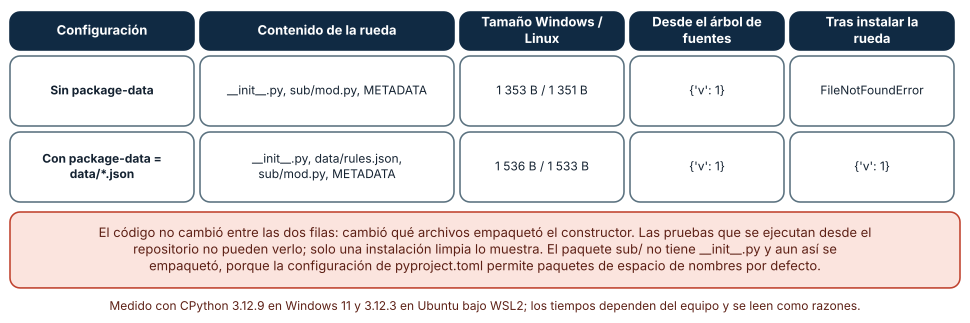
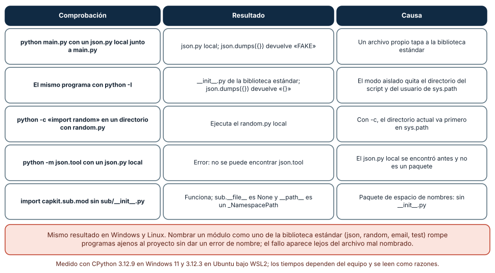
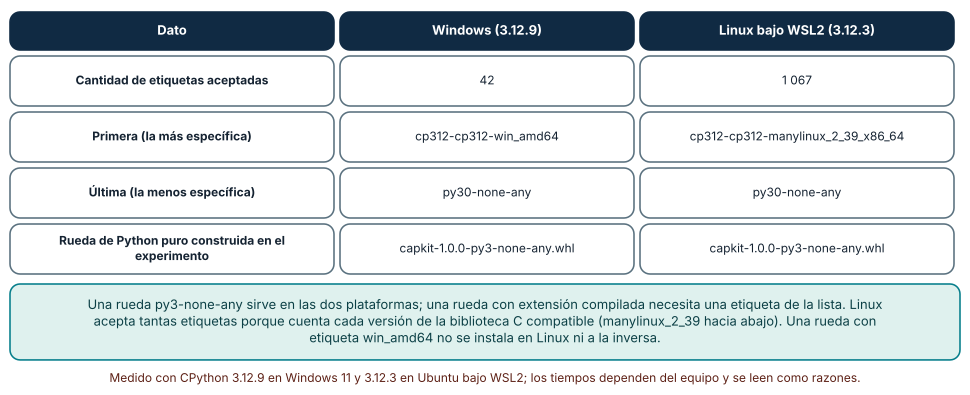

← SE-111 — Resolución de dependencias y lockfiles · ↑ Parte 09 · 📚 Índice completo · 🌐 Portal · SE-113 — CLI, flags, configuración y códigos de salida →
Punto profesional y fundamento pedagógico
Punto profesional. La clase existe para separar módulo importable, paquete de distribución, metadata, build y publicación.
Por qué aparece aquí. Se sitúa después de Resolución de dependencias y lockfiles y antes de CLI, flags, configuración y códigos de salida: convierte el conocimiento anterior en una decisión observable que la clase siguiente podrá reutilizar. La continuidad se comprueba en el artefacto, no por compartir vocabulario.
Error conceptual que debe corregir. Equiparar carpeta de código con artefacto publicable.
Secuencia de aprendizaje. Antes de leer la solución, el estudiante predice el resultado del caso normal y del error conceptual anterior. Luego explica un caso resuelto paso a paso, construye un contraejemplo que cambie la decisión y, sin consultar el texto, reconstruye el mecanismo y lo aplica a una entrada nueva. La secuencia usa predicción, explicación propia, contraste y recuperación. ICAP distingue participación de construcción de conocimiento; How People Learn II exige conectar conocimiento previo, contexto y transferencia; la práctica de recuperación respalda producir de nuevo la explicación tras una demora; y Education for Life and Work exige devolución que explique la causa del error.
Evidencia de aprendizaje. Package-lifecycle.md con sdist/wheel, metadata, instalación limpia e importación. Debe contener predicción previa, observación, explicación causal, contraejemplo, criterio de aceptación y una nota de qué dato haría cambiar la conclusión.
Límite de la conclusión. Construir un artefacto no demuestra que sea publicable o seguro.
Trazabilidad fuente → afirmación
| Fuente primaria u oficial | Afirmación que respalda | Lo que no prueba |
|---|---|---|
| Python Packaging User Guide: Specifications | Metadata, nombres, versiones, dependencias y artefactos de distribución; autoridad: Python Packaging Authority | No demuestra por sí sola que el artefacto del estudiante sea correcto. |
| pylock.toml Specification | Lock files para instalaciones reproducibles y selección por entorno; autoridad: Python Packaging Authority | No demuestra por sí sola que el artefacto del estudiante sea correcto. |
| Python Standard Library | Argparse, importlib.metadata, subprocess y apis de automatización; autoridad: Python Software Foundation | No demuestra por sí sola que el artefacto del estudiante sea correcto. |
Antes de empezar
Esta clase continúa el producto reutilizable con SDK y CLI de la Parte 09. Recupera la evidencia de la clase anterior, añade una decisión propia de Paquetes, módulos y publicación y deja un artefacto que la clase siguiente deberá consumir. La pregunta activa es: ¿Qué transforma un árbol fuente en artefactos instalables, inmutables y verificables?
Prerrequisitos
- Haber completado la clase anterior o reconstruir su contrato y evidencia.
- Python 3.11 o posterior, terminal, editor y Git; un segundo runtime es opcional y debe declararse.
- Trabajar con fixtures sintéticos: ninguna observación necesita datos de una persona o sistema real.
Problema auténtico
El producto reutilizable con SDK y CLI funciona desde el checkout, pero la wheel omite fixtures y el sdist incluye secretos de un archivo local. Probar solo python -m no cubre la distribución real.
Objetivos observables
Al terminar podrás explicar los cinco mecanismos de esta clase, predecir su comportamiento antes de ejecutar, construir un caso normal y uno límite, diagnosticar el fallo controlado, comparar una alternativa y entregar evidencia que otra persona pueda reproducir.
Mapa conceptual
Ver la notación fuente del diagrama
flowchart LR
N1[Módulo, paquete e importación] --> N2[Metadata de proyecto] --> N3[sdist / wheel] --> N4[Build aislado] --> N5[Publicación / repositorio]
N5 -->|fallo o cambio| N1El mapa se lee como una cadena de razonamiento, no como fases obligatorias del runtime. La flecha de retorno indica que un fallo o cambio de requisito obliga a revisar el modelo inicial; no autoriza a parchear solo la última salida.
Temas y por qué importan
| Tema | Por qué cambia una decisión profesional | Evidencia mínima |
|---|---|---|
| Módulo, paquete e importación | Un módulo es unidad importable; un paquete organiza módulos y namespace. | Predicción, traza causal y contraejemplo de Módulo, paquete e importación en package-lifecycle.md |
| Metadata de proyecto | Nombre, versión, runtime, dependencias, licencia, autores y entry points permiten construir e instalar. | Predicción, traza causal y contraejemplo de Metadata de proyecto en package-lifecycle.md |
| sdist y wheel | El sdist contiene fuente necesaria para construir; wheel es distribución construida para tags compatibles. | Predicción, traza causal y contraejemplo de sdist y wheel en package-lifecycle.md |
| Build aislado | El backend se ejecuta con requisitos de build declarados, evitando depender del entorno del autor. | Predicción, traza causal y contraejemplo de Build aislado en package-lifecycle.md |
| Publicación y repositorio | Publicar crea un artefacto consumible e idealmente inmutable. | Predicción, traza causal y contraejemplo de Publicación y repositorio en package-lifecycle.md |
Conceptos y decisiones
1. Módulo, paquete e importación
Un módulo es unidad importable; un paquete organiza módulos y namespace. El layout src/ reduce import accidental desde checkout. La API pública se exporta deliberadamente; explorar internals por conveniencia crea consumidores frágiles.
2. Metadata de proyecto
Nombre, versión, runtime, dependencias, licencia, autores y entry points permiten construir e instalar. Metadata incoherente con código o tag produce releases ambiguos. La versión tiene una fuente canónica y las demás superficies se derivan.
3. sdist y wheel
El sdist contiene fuente necesaria para construir; wheel es distribución construida para tags compatibles. Tener ambos no implica mismo contenido. Se inspeccionan archivos y se instala cada artefacto en entorno limpio.
4. Build aislado
El backend se ejecuta con requisitos de build declarados, evitando depender del entorno del autor. Builds reproducibles requieren más: timestamps, orden y toolchain pueden variar. Hash igual solo se afirma tras comparar bytes bajo protocolo declarado.
5. Publicación y repositorio
Publicar crea un artefacto consumible e idealmente inmutable. Se ensaya en índice de prueba o directorio local, verifica identidad y luego promueve. Credenciales usan mínimo alcance y no aparecen en comandos, logs o configuración versionada.
Funciona en el repositorio, falla instalado
Se construyeron dos ruedas de un mismo paquete de ejemplo con pip wheel: una sin package-data y otra con data/*.json declarado. La primera contenía __init__.py, sub/mod.py y los metadatos, pero no el archivo data/rules.json (1 353 bytes en Windows y 1 351 en Linux). Ejecutar load_rules() desde el árbol de fuentes funcionó ({'v': 1}); instalada la rueda en un directorio aparte, lanzó FileNotFoundError. La segunda rueda (1 536 y 1 533 bytes) incluyó el archivo y funcionó en ambos lugares.
El código fue el mismo: cambió qué archivos empaquetó el constructor. Las pruebas ejecutadas desde el repositorio no pueden verlo, porque el archivo está allí. Dos defensas: listar el contenido de la rueda (zipfile.ZipFile(...).namelist()) y compararlo con una lista esperada, y ejecutar una prueba de humo desde un entorno limpio, fuera del directorio del proyecto. También se observó que sub/ no tenía __init__.py y aun así se empaquetó, porque [tool.setuptools.packages.find] en pyproject.toml admite paquetes de espacio de nombres por defecto: una configuración implícita que conviene declarar.

Cómo leer la figura. Compara las dos filas: lo único que cambió es la configuración de empaquetado. La última columna es la que ve el usuario. Dónde deja de valer: se usó setuptools; otros constructores (hatchling, flit) tienen reglas distintas sobre qué incluyen por defecto. El tamaño exacto en bytes depende de la versión del constructor y de la plataforma.
Quién gana en sys.path
Un archivo json.py junto al script tapó a la biblioteca estándar: python main.py importó el local y json.dumps({}) devolvió FAKE. Con python -I (modo aislado, que quita el directorio del script y del usuario de sys.path), importó el __init__.py de la estándar y devolvió {}. Con python -c "import random" en un directorio con random.py, se ejecutó el local, porque con -c el directorio actual va primero. Y python -m json.tool falló con «Error while finding module specification» porque el json.py local se encontró antes y no es un paquete. Resultados idénticos en Windows y Linux.
Los paquetes de espacio de nombres explican otro comportamiento: capkit/sub/ sin __init__.py se importó sin error, con __file__ igual a None y __path__ de tipo _NamespacePath. Un directorio con ese nombre en otro lugar de sys.path se fusionaría con él. Reglas de ingeniería que salen de esto: no nombrar módulos como los de la biblioteca estándar, declarar __init__.py en los paquetes que quieres como regulares, y ejecutar las pruebas del paquete instalado (o con -I) para no depender del directorio actual.

Cómo leer la figura. Cada fila cambia una variable (cómo se invoca Python o qué archivo hay en el directorio). La columna «Causa» enuncia el mecanismo. Dónde deja de valer: el orden de sys.path depende de cómo se lanza Python (script, -m, -c, entorno virtual, PYTHONPATH); lo medido es el caso de directorio de trabajo con un archivo sombra. Python 3.11+ ofrece -P para no anteponer el directorio actual.
Etiquetas de rueda: quién puede instalar qué
El nombre de una rueda codifica compatibilidad: capkit-1.0.0-py3-none-any.whl significa Python 3, sin ABI específica, cualquier plataforma. El intérprete mantiene una lista ordenada de etiquetas que acepta: 42 en Windows (la primera cp312-cp312-win_amd64) y 1 067 en Linux (la primera cp312-cp312-manylinux_2_39_x86_64); en ambos la última es py30-none-any. Linux acepta muchas más porque cuenta cada versión compatible de la biblioteca C, de manylinux_2_39 hacia abajo, más las variantes heredadas.
La consecuencia de diseño es simple: una rueda pura (py3-none-any) sirve en todas partes y es la que se prefiere si no hay extensión compilada. Una rueda con extensión necesita una etiqueta de la lista del intérprete destino, y publicar una sola plataforma deja a las demás compilando desde el código fuente (sdist) o sin soporte. El constructor calcula la etiqueta; el trabajo del autor es saber qué tiene (compilado o no) y comprobar que el nombre de la rueda lo dice.

Cómo leer la figura. Compara las dos columnas: la cantidad de etiquetas y cuál es la primera. Esa lista es el orden de preferencia del instalador. Dónde deja de valer: la lista depende de la versión de Python, de la biblioteca C del sistema y de packaging; en macOS, musl o PyPy es otra. No se construyó una rueda con extensión compilada en este experimento.
Definiciones de trabajo
- módulo, paquete e importación: un módulo es unidad importable; un paquete organiza módulos y namespace.
- metadata de proyecto: nombre, versión, runtime, dependencias, licencia, autores y entry points permiten construir e instalar.
- sdist y wheel: el sdist contiene fuente necesaria para construir; wheel es distribución construida para tags compatibles.
- build aislado: el backend se ejecuta con requisitos de build declarados, evitando depender del entorno del autor.
- publicación y repositorio: publicar crea un artefacto consumible e idealmente inmutable.
Las definiciones son operativas para el producto reutilizable con SDK y CLI. No convierten términos con historia más amplia en sinónimos y deben contrastarse con la documentación primaria enlazada al final.
Ejemplo mínimo
python -m build
python -m zipfile -l dist/engineering_sdk-*.whl
python -m venv .verify
.verify\Scripts\python -m pip install dist/engineering_sdk-*.whl
.verify\Scripts\python -c "import engineering_sdk; print(engineering_sdk.__version__)"Antes de ejecutar, predice estado, resultado y error. Después registra versión, comando y salida. Si el fragmento es pseudocódigo o pertenece a otro lenguaje, etiquétalo como tal y no afirmes que fue ejecutado.
Ejemplo profesional
En el producto reutilizable con SDK y CLI, un release contiene contrato público, artefactos inmutables, dependencias, procedencia, ejemplos, errores y ruta de migración. La implementación de esta clase debe conservar ese contrato aunque cambie la forma interna. El caso profesional no pregunta únicamente si produce una salida: pregunta quién puede producirla, qué estado observa, cómo falla y qué rastro permite disputar una decisión incorrecta.
Compara el caso normal con autorización falsa, evidencia incompleta, empate y repetición. Un mecanismo es apropiado cuando esas diferencias quedan visibles y localizadas; es peligroso cuando dependen de orden accidental, estado oculto o una convención que el consumidor no puede conocer.
Práctica guiada
- Copia el contrato de entrada y salida antes de escribir implementación.
- Predice el caso normal y un límite; identifica la invariante que no puede romperse.
- Implementa la versión mínima sin I/O dentro del núcleo.
- Ejecuta el caso y conserva comando, versión y salida bajo
evidence/. - Introduce el fallo controlado, reduce la reproducción y formula dos hipótesis rivales.
- Corrige la causa, añade regresión y ejecuta el conjunto completo.
- Compara con otro paradigma o lenguaje indicando qué semántica se preserva.
Ejercicios
- Rueda vs repositorio: construye un paquete con un archivo de datos, instálalo con
--targeten un directorio aparte y ejecuta desde allí; reproduce elFileNotFoundError, corrígelo conpackage-datay compara elnamelistde las dos ruedas. - Sombra en
sys.path: crea unjson.pylocal, ejecuta conpython script.py, con-Iy con-m json.tool, y registra qué módulo se importa y cuál es__file__en cada caso. - Etiquetas: imprime con
packaging.tags.sys_tags()las tres primeras etiquetas de tu intérprete y construye, a mano o conpip wheel, una rueda pura; explica por qué su etiqueta no coincide con la primera de la lista. - Lista esperada: escribe una prueba que abra la rueda con
zipfiley falle si aparecetests/o falta el archivo de datos opy.typed.
Reto verificable
Entrega implementación, fixtures, pruebas y un informe corto. Se aprueba si otra persona ejecuta desde checkout limpio, obtiene los mismos resultados y puede relacionar cada rama o transformación con una regla del dominio. No se aprueba por cantidad de archivos ni por usar la sintaxis característica del paradigma.
Caso conductor
El producto reutilizable con SDK y CLI empaqueta el motor de la biblioteca de estructuras y algoritmos como engineering_sdk, expone choose_next, una CLI y un punto de extensión. Ejecuta instalación limpia, entrada válida, configuración ausente, plugin incompatible y actualización entre dos versiones. Cambia después una sola regla o condición y revisa qué archivos, pruebas y trazas debieron modificarse. Esa superficie de cambio alimenta el proyecto final de la parte.
Preguntas frecuentes
¿Por qué las pruebas pasan y el paquete instalado falla?
Porque las pruebas leen el árbol de fuentes, donde el archivo de datos existe, y el usuario recibe solo lo que el constructor empaquetó. En el experimento, load_rules() funcionó desde el repositorio y falló con FileNotFoundError desde la rueda.
¿Debo poner __init__.py en todos los directorios?
En los que quieras como paquetes regulares, sí. Sin él, Python los trata como paquetes de espacio de nombres: __file__ es None y pueden fusionarse con otro directorio del mismo nombre. Decídelo a propósito.
¿Qué diferencia hay entre una rueda y un sdist?
La rueda es un artefacto ya construido que se instala copiando archivos; el sdist es el código fuente que se construye en la máquina del usuario. Para Python puro conviene publicar ambos y verificar que la rueda contiene lo esperado.
¿Puedo nombrar mi módulo utils.py o test.py?
Puedes, pero un módulo con el nombre de uno de la biblioteca estándar o de otro paquete instalado lo tapa o es tapado según sys.path. Un nombre propio del producto (capkit_utils) evita la colisión.
Fallo controlado y diagnóstico
La prueba importa desde raíz del repo aunque la wheel carece de un módulo. Ejecuta verificación fuera del checkout y añade inspección del artefacto.
Registra síntoma, entrada mínima, hipótesis, observación que descarta cada hipótesis, causa, corrección y prueba de regresión. No cambies simultáneamente implementación, fixture y expectativa.
Construye la rueda sin declarar package-data y comprueba el paquete solo desde el repositorio. Síntoma: las pruebas pasan, la instalación en un directorio limpio lanza FileNotFoundError al leer el archivo de datos. Hipótesis rivales: (a) la ruta del archivo está mal calculada; (b) el archivo no viajó en la rueda. Prueba: namelist() de la rueda no contiene capkit/data/rules.json (1 353 bytes frente a 1 536 con el archivo); la misma ruta funciona desde el árbol de fuentes. Conclusión: la causa es el empaquetado, no la ruta. Corrección: declarar package-data y añadir una prueba que lista la rueda y otra de humo desde un directorio ajeno al proyecto. No cambies a la vez el código y la configuración de empaquetado.
Errores comunes y cómo corregirlos
| Síntoma | Causa probable | Corrección |
|---|---|---|
FileNotFoundError solo tras instalar | El archivo de datos no está en package-data | Declararlo y comprobar el contenido de la rueda contra una lista esperada |
import json devuelve un objeto raro en un directorio concreto | Un json.py local tapa la biblioteca estándar | Renombrar el archivo y ejecutar con -I o -P para comprobar |
Un directorio sin __init__.py «funciona» en local y no se empaqueta | Paquete de espacio de nombres y búsqueda de paquetes distinta | Añadir __init__.py o declarar namespaces de forma explícita |
pip compila desde fuentes en una plataforma que debería tener rueda | No hay rueda con una etiqueta aceptada por ese intérprete | Publicar ruedas por plataforma o una py3-none-any si es Python puro |
| La misma configuración produce ruedas distintas en dos máquinas | Versiones distintas del constructor (setuptools) | Fijar build-system.requires y registrar la versión usada |
Entorno y archivos clave
work/SE-112/
├── README.md
├── engineering_sdk/
│ ├── domain.py
│ └── se_112.py
├── fixtures/cases.json
├── tests/test_se_112.py
└── evidence/diagnosis.mdEl README declara plataforma, runtimes, comandos, limpieza y límites. Evita dependencias externas cuando la biblioteca estándar permita observar el mecanismo; si agregas una, fija procedencia y versión.
Seguridad, ética y accesibilidad
- la autorización forma parte del dominio y no se infiere por ausencia de rechazo;
- no uses
eval, reglas descargadas ni serialización insegura; - limita colas, recursión, tamaño de entrada y tiempo de evaluación;
- redacta trazas y conserva una explicación textual además de color o animación;
- una recomendación automatizada debe poder revisarse, impugnarse y corregirse;
- respeta licencias de ejemplos y atribuye adaptaciones.
Puente hacia el trabajo con agentes
Un agente que corrige «el paquete no encuentra el archivo» suele cambiar la ruta en el código o copiar el archivo en el lugar donde falla, y comprobar solo desde el repositorio. Exige que toda corrección de empaquetado incluya el listado de la rueda antes y después, una instalación en un entorno limpio fuera del árbol y el comando exacto; pídele que justifique cada archivo que entra o sale de la rueda. Si el agente ejecuta pruebas con el directorio del proyecto en sys.path, esas pruebas no demuestran nada sobre el artefacto.
Transferencia
Traslada un fixture al segundo modelo, herramienta, plataforma o lenguaje. Compara representación de ausencia, error, mutabilidad, orden y cancelación. La transferencia está lograda cuando el contrato se conserva y las diferencias están explicadas, no cuando la interfaz se parece.
Evaluación y evidencia
| Criterio | Evidencia para aprobar |
|---|---|
| comprensión | explicación causal de los cinco mecanismos |
| corrección | normal, límite, inválido y contraejemplo |
| diseño | estado, efectos y contrato localizables |
| diagnóstico | reproducción mínima y regresión |
| transferencia | comparación semántica, no estética |
| reproducibilidad | versiones, comandos, salida y límites |
Fuentes
- Semantic Versioning 2.0.0 — Api pública, versiones, prereleases y compatibilidad declarada; autoridad: Semantic Versioning project.
- Python Packaging User Guide: Specifications — Metadata, nombres, versiones, dependencias y artefactos de distribución; autoridad: Python Packaging Authority.
- pylock.toml Specification — Lock files para instalaciones reproducibles y selección por entorno; autoridad: Python Packaging Authority.
- Python Standard Library — Argparse, importlib.metadata, subprocess y apis de automatización; autoridad: Python Software Foundation.
- SPDX Specification 3.0 — Identificadores, sbom y procedencia legible por máquinas; autoridad: Linux Foundation.
- REUSE Specification — Declaración inequívoca y verificable de copyright y licencias por archivo; autoridad: Free Software Foundation Europe.
Cada fuente respalda el mecanismo indicado; ninguna demuestra que la implementación del producto reutilizable con SDK y CLI sea correcta. Esa afirmación depende de fixtures, pruebas, trazas y revisión reproducible.
- Python Packaging: Binary distribution format — estructura de una rueda,
RECORDy nombres de archivo. - Python Packaging: Platform compatibility tags — significado de las etiquetas de Python, ABI y plataforma.
- setuptools: Data files support — cómo declarar archivos de datos en el paquete.
- setuptools: Package discovery — descubrimiento automático y paquetes de espacio de nombres.
- Python: The import system —
sys.path, paquetes regulares y de espacio de nombres. - PEP 427: The Wheel Binary Package Format — formato histórico de la rueda, reemplazado por la especificación vigente anterior.
- Python: opciones de línea de comandos (
-I,-P) — aislamiento desys.pathen el arranque.
Límites y siguiente paso
Un paquete instalado todavía necesita una interfaz operable y estable. La siguiente clase diseña CLI, configuración, streams y códigos de salida como API pública.
Glosario
- módulo, paquete e importación: un módulo es unidad importable; un paquete organiza módulos y namespace.
- metadata de proyecto: nombre, versión, runtime, dependencias, licencia, autores y entry points permiten construir e instalar.
- sdist y wheel: el sdist contiene fuente necesaria para construir; wheel es distribución construida para tags compatibles.
- build aislado: el backend se ejecuta con requisitos de build declarados, evitando depender del entorno del autor.
- publicación y repositorio: publicar crea un artefacto consumible e idealmente inmutable.
← SE-111 — Resolución de dependencias y lockfiles · ↑ Parte 09 · 📚 Índice completo · 🌐 Portal · SE-113 — CLI, flags, configuración y códigos de salida →